South-east asia offers a number of tourist-friendly, visa-friendly, and budget-friendly countries. So, if you have a mid-life crisis or need a digital detox, I would recommend visiting this part of the globe. List of countries that I recommend are Thailand, Laos, Vietnam, Indonesia, and Malaysia.
Thailand
Places to visit: Chiang Mai, Pai, Chiang Rai, Koh Samui, Koh Tao, Koh Phangan, and Krabi. In southern Thailand, one can also visit less crowded islands that are more expensive and particularly popular for scuba diving. While transiting, you will likely pass through Bangkok, where you can visit a few Buddhist temples. I would recommend against wasting time in Bangkok.
Laos
Places to visit: Nong Khiaw, Luang Prabang, Vang Vieng, 4000 islands. In southern Laos, one can also complete the Thakek Loop on a motorbike in 3-4 days. If one has time, the 4000 Islands are also worth a visit.
Vietnam
Places to visit Sapa, Ninh Binh, Ha Long Bay, Cat Ba Island, Da Nang, Hue, Da Lat, and Hoi An. In northern Vietnam, you can rent a motorbike and complete the Ha Giang Loop in 3-4 days. Vietnam is my top destination in Southeast Asia so far. It is tourist-friendly with diverse landscapes. Phu Quoc is a touted to be a tourist island but it has been destroyed extreme commercialization. Given the number of hotels and restaurants, it is even difficult to find a beach on this island. The national park is closed to public. The island has a region developed with european architecture in mind. It feels like a ghost town as it is very far from city centre.
Malaysia
My favorite places in Malaysia are Kuala Lumpur, Georgetown and Langkawi. Other tourist places include Cameron Highlands and Perhentian island.
Week 2
Starting from Sacramento, I visited Yosemite, Sequoia, Kings Canyon, Pinnacles, Santa Barbara, California Coastal National Monuments, and Muir Woods. Locations for week 2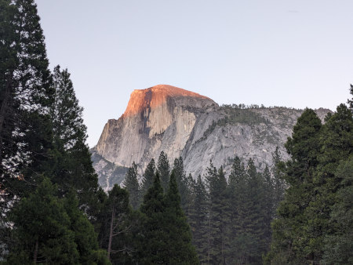Half dome in Yosemite national park
Yosemite is highly popular, attracting both tourists and locals, leading to large crowds in summer. Expect long car queues at park entrances during the day. To avoid delays and potential entrance reservation requirements, arrive outside operating hours. Many scenic spots are accessible by car or overcrowded shuttle buses. I found it convenient to use my car. Recommended hikes in Yosemite national park: Lower Yosemite trail (easy), Vernal and Nevada fall trails (difficult), Sentinel dome and Taft point (moderate). More hiking options can be found on the park website.
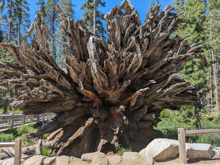A fallen tree in Sequoia national park
Having already visited a Sequoia grove in Yosemite National Park, I opted to explore different viewpoints in Sequoia and Kings Canyon National Park. A recommended easy hike in Sequoia National Park is Moro Rock. More hiking options can be found on the park website.
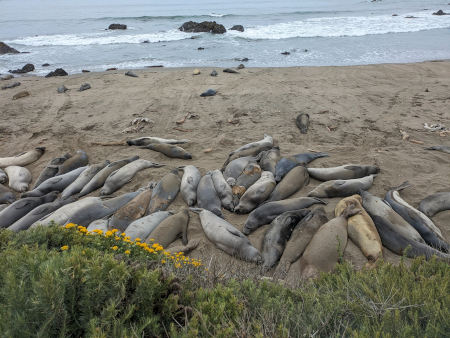Seals on one of the California coastal national monuments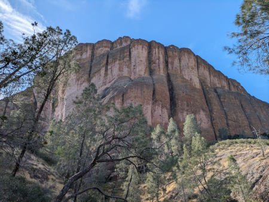Pinnacle national park
For me Pinnacle national park was a bit disappointing. If it were up to me, I would not classify it as a national park. In case you decide to visit it, I would recommended the Balconies cliffs-Cave loop (moderate). More hiking options can be found on the park website.
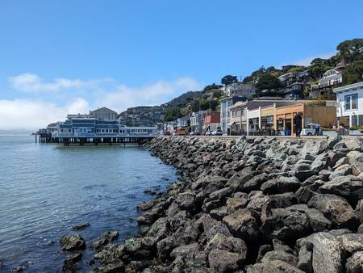Short detour to San Franscisco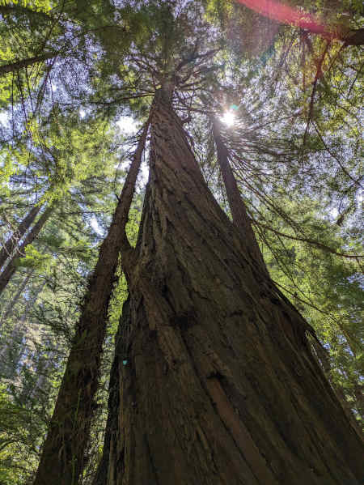Muir woods
Muir Woods has limited parking and requires reservations during peak seasons, costing $10, which may seem pricey for its offerings. Its proximity to San Francisco could justify the cost, but I wouldn't recommend this place unless you are visiting the Golden gate bridge and have plenty of time to spare.
Week 3
Starting from Salt Lake City, I toured Yellowstone, Grand Teton, Arches, and Canyonlands.
Locations for week 3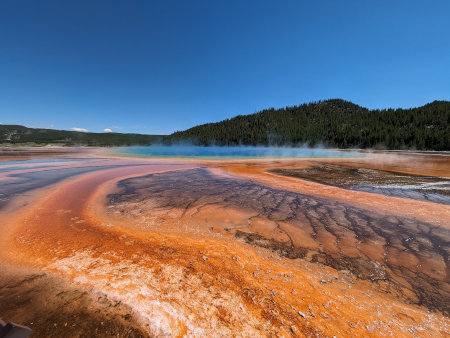Grand prismatic spring in Yellowstone national park
Yellowstone is spread over a large area with major park roads forming an 8 shape. Although yellowstone is famous for its geysers and springs, it has variety of landscapes and geological features in different part of the park. Wildlife is abundant in the park, with bison easily spotted by the roadside. Carrying binoculars can aid in spotting bears. Recommended hikes in Yellowstone national park: Grand canyon of the Yellowstone (easy), Avalanche (difficult), Mud volcano trail (easy), Mammoth hot springs (easy). More hiking options can be found on the park website.
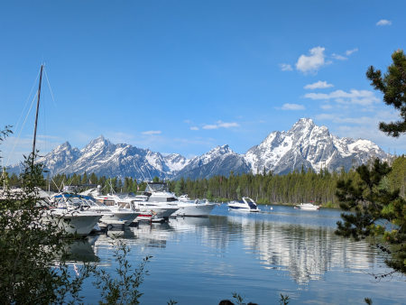Grand Teton national park
Having explored many national parks on Canada's west coast, I found Grand Teton overrated. I hiked to Inspiration Point out of boredom, but wouldn't recommend it. The initial trek through the forest was unremarkable. Ferries provide a shortcut but are costly. However, seeing a grizzly bear (I did not buy a bear spray), elk, and fox on my late evening return made the hike fruiful. More hiking options can be found on the park website.
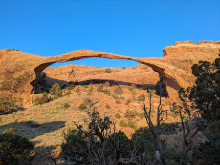Landscape arch in Arches national park
Arches national park is a natural wonder, with some arches seeming almost impossible to form without human intervention. However, after visiting several of the main arches, the experience can feel somewhat repetitive. Recommended hikes in Arches national park: Delicate arch (moderate), Double arch (moderate), Landscape arch (easy). More hiking options can be found on the park website.
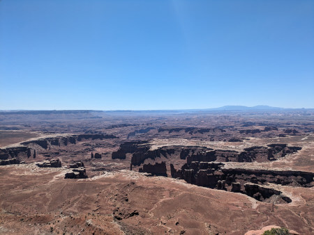Canyonlands
Canyonlands national park is a combination of features from Zion, Bryce Canyon, and Grand Canyon national park. This is why I advise against covering all national parks in Utah region at once as similar national parks can make the trip feel like a job. Canyonlands is mostly devoid of vegetation and trees, making it challenging to stay outside for extended periods. Hence, I drove through its scenic points for a few hours and left.
I used Frontier's Go Wild one-month pass to visit Las Vegas, Sacramento, and Salt Lake City. The pass offers cheap flights but can only be booked one day in advance and has blackout dates. Moreover, some of the routes can not be booked using Go Wild pass. I always bought a carry-on bundle for blankets. In the middle of my trip, Frontier hiked the price for a carry-on from $30 to $40. While booking, I chose transit airports with lounge facilities, especially Denver with its Capital One lounge. Frontier also supports TSA Pre for expedited security checks. Related to their in-flight service, their flight seats don't recline, making them uncomfortable but bearable for short flights.
Which car to rent?
I am 5'11" and I could sleep comfortably in a standard SUV (Hyundai Santa Fe). In an intermediate SUV (Toyota RAV4), my foot was hanging out, so either I had to sleep diagonally or put some luggage below my foot. Both of these options can accomodate two adults for sleeping. For car rentals, consider weekly or monthly bookings for discounts. Fill up your tank before entering a national park to save on fuel costs; fuel inside parks tends to be expensive. Use Google Map to find cheaper petrol stations between parks.
Car camping
For car camping, it is recommended that one carries a thick blanket to use it as a bedding. More blankets may be required depending on the weather. Also, pack toiletries like soap, shampoo, moisturiser, sunscreen, etc.
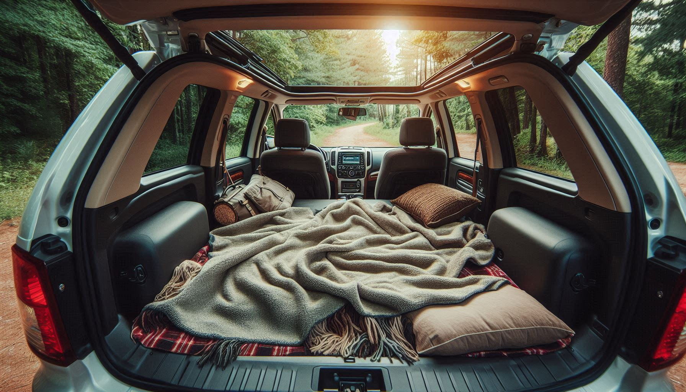Car camping in a SUV
Car insurance
Most rental companies offer car damage waiver and third-party liability insurance, but it's expensive. Instead, get a credit card that includes free car insurance, such as those from Capital One, Chase, or American Express. Alternatively, AAA membership provides these insurances with additional benefits at a better price. Visiting national parks involves long drives on challenging roads. It’s advisable to get two types of insurance: one for car damage and one for third-party liability. Some states require a minimum coverage for these two category of insurance. While insurance for theft of personal property is available, it's better to keep valuables secure. Fiiling an insurance claim and following up with paperwork is not fun. So, drive carefully and take rest when required.
What to eat?
Tortillas, canned foods, spreads, and ready-to-eat noodles. One can usually find hot water at gas stations or grocery stores in national parks. Some of these places also have microwave facilities. Plastic utensils are available at Walmart, gas stations, or delis. Bring fruits, trail mixes for easy snacking. If you can buy a portable gas stove and cylinder, you can also cook regular meals. I didn't try this due to time constraints and laziness. Plan ahead and shop outside national parks as grocery stores inside charge more for the same items. Buying from Walmart allows returns within 90 days, so consider purchasing extra food for backup.
Maintaining hygiene in car
Bring a couple of trash bags for waste and dirty laundry. Use a smaller bag for trash to prevent attracting flies during the summer. Trash bins are readily available, but laundry machines in national parks are a rare find.
National parks
Fees and reservation
Some national parks require reservations for crowd control, in addition to entrance fees. For visits to multiple national parks, consider buying an annual pass. Alternatively, you can enter national parks for free and without reservations by entering outside of their working hours.
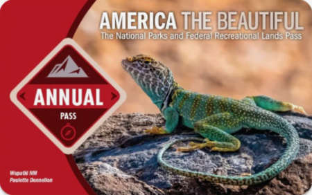Annual pass for national parks in US
Map/guides for national parks
Check the National Park Service website and app for park info. Upon entry, you'll get maps and a newsletter with latest updates. For more details, talk to a ranger at visitor centers. AllTrails offers a comprehensive list of trails, but requires a subscription for offline use and there's limited network inside parks. I recommend downloading Maps.me in advance for free navigation while hiking.
Shower and restrooms
Most national parks offer showers within or near the park. For details, ask a ranger at the visitor center. The facilities range from basic, coin-operated showers with limited time to showers with unlimited time and free toiletries. You can also find showers at truck stops, RV campsites, fitness centers, and airport lounges. Restrooms are available at visitor centers and trailheads, but trailhead restrooms do not have water.